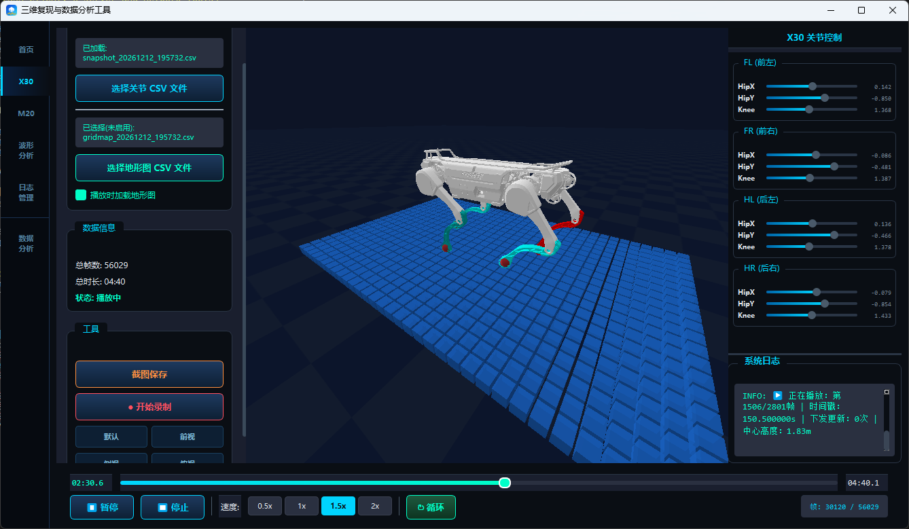
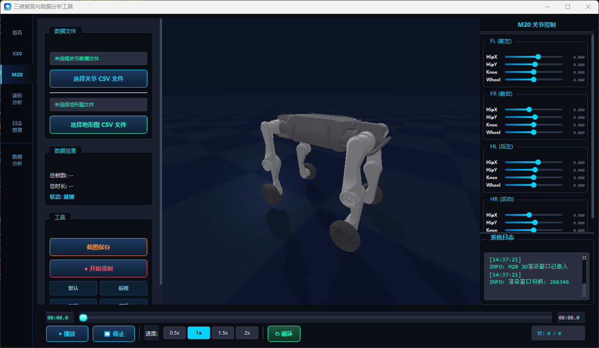
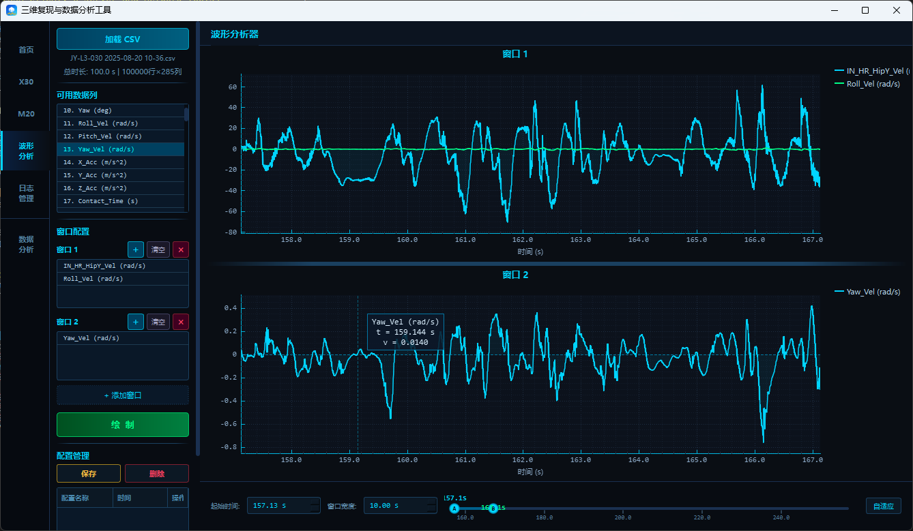
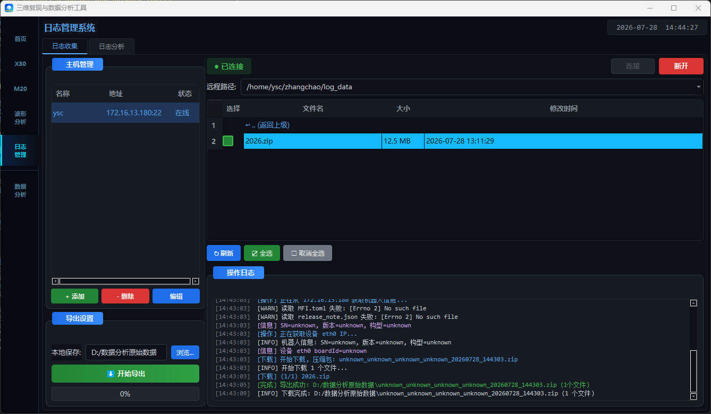
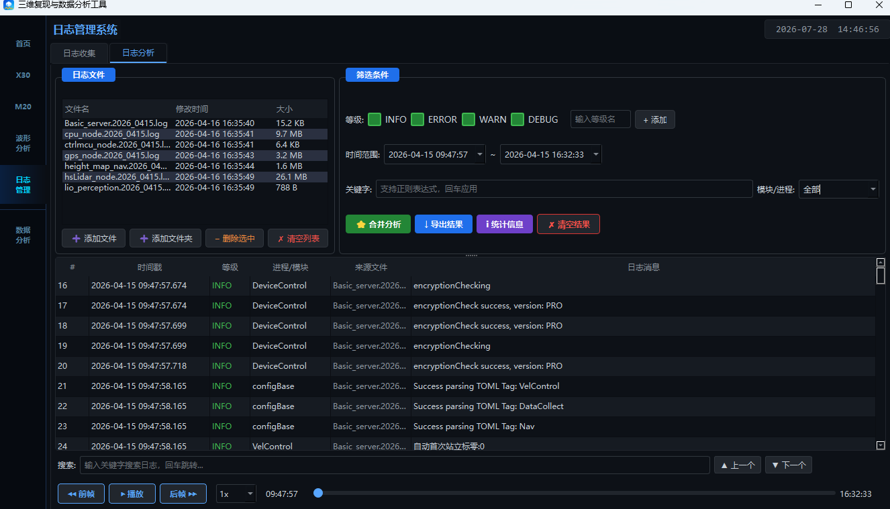
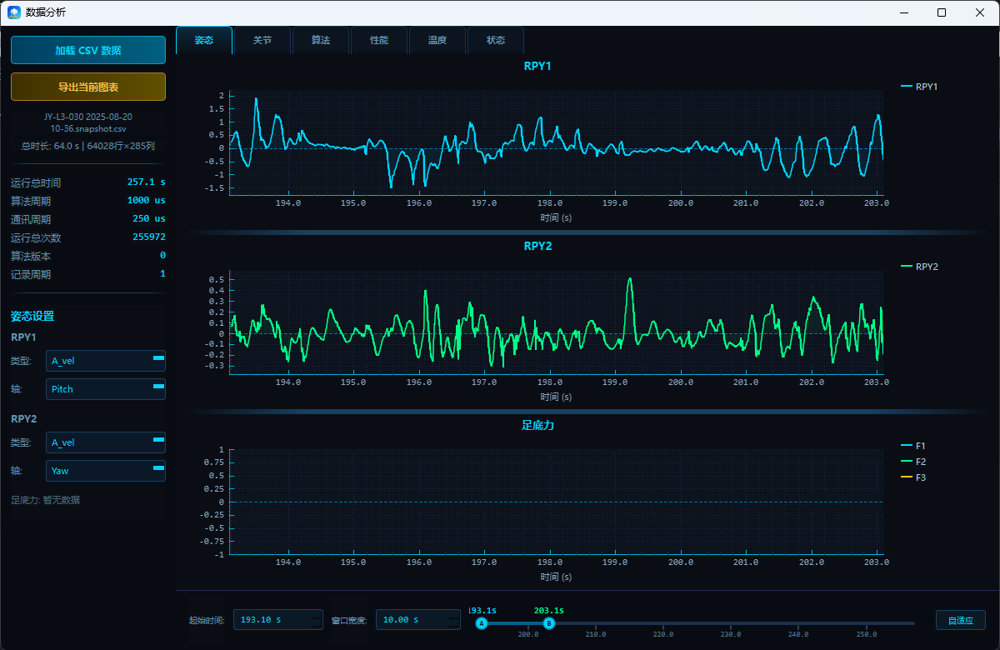

概要设计说明书 · HLD
三维复现与数据分析工具概要设计说明书（HLD）
| 文档编号 | HLD-RS-001 | 版本 | V1.0 |
| 项目名称 | 机器人三维复现与数据分析工具 | 状态 | 初版 |
| 适用范围 | Windows Qt 桌面端及其本地辅助进程 | 日期 | 2026-10-09 |
| 关联需求 | 《三维复现与数据分析工具需求规格说明书》V1.0 | 文档性质 | 概要设计初版 |
| 版本 | 日期 | 修订说明 | 状态 |
|---|
| V1.0 | 2026-10-09 | 初版。说明桌面端功能组成、程序模块、数据接口、运行流程、异常处理和安装交付设计。 | 初版 |
1文档目的与范围
本文说明机器人三维复现与数据分析工具桌面端各项功能由哪些程序模块完成，模块之间如何传递数据，以及启动、播放、分析、日志收集和退出时的处理流程。开发人员依据本文实现和维护软件，测试人员依据本文确认模块连接和异常处理。
设计范围包括 X30、M20、DR02 三维复现、数据分析、波形分析、日志收集、日志分析、截图录像和 Windows 安装交付。Web 端提供与桌面端相同的三维复现和数据查看功能；当桌面端 PyBullet 渲染不够流畅时，可使用浏览器端渲染，具体 Web 实现不在本文展开。
功能边界：三维复现直接显示 CSV 中记录的关节角和 IMU 姿态，用于离线查看机器人动作；软件不向真实机器人发送控制指令，也不计算控制算法结果。
2功能与实现对应关系
| 工具 / 页面 | 输入 | 主要处理 | 负责模块 |
|---|
| X30 三维复现 | 关节 CSV、可选地形 CSV | 显示 X30 模型，按帧播放关节和姿态；需要时同步显示地形。 | MainWindow、X30 三维服务、map.py |
| M20 三维复现 | 关节 CSV | 显示 M20 模型，按帧播放关节和姿态；空闲时可调节轮关节。 | MainWindow、M20 三维服务 |
| DR02 人形三维复现 | 31 关节 CSV、可选机身姿态 | 显示 DR02 人形模型，按帧播放躯干、双臂、头部和双腿动作。 | MainWindow、DR02 三维服务、DR02JointPanel |
| 播放控制 | 用户的播放、暂停、停止、跳转、速度和循环操作 | 把操作发送给当前三维服务，并用返回的帧号和关节值更新界面。 | PyBulletClient、PlayerBar、关节面板 |
| 截图与录像 | 当前三维画面、保存路径 | 截图直接保存；录像在后台写入 AVI，避免阻塞界面。 | ScreenRecorder、AviWriter |
| 数据分析 | 普通 CSV 或快照 CSV | 读取需要的数据列，按六类固定页面绘图并导出。 | CsvParser、CurveViewer、ScopeChart |
| 波形分析 | CSV、用户选择的数据列 | 按用户配置建立多个图窗，保存或加载图窗配置。 | CustomAnalyzer |
| 日志收集 | 设备信息、远程目录和所选文件 | 连接设备，浏览、预览、搜索和下载日志，最后打包为 ZIP。 | LogCollectWidget、SshClient、SSH 服务 |
| 日志分析 | 本地日志文件或目录 | 按时间合并日志，完成筛选、搜索、回放、统计和导出。 | LogAnalysisWidget |
| 安装交付 | 主程序、三个本地服务和模型资源 | 生成包含全部运行文件的 Windows x64 安装包。 | 构建脚本和安装脚本 |
3技术选型
| 用途 | 采用技术 | 在本工具中的作用 |
|---|
| 桌面界面 | Qt 6 / C++17 | 显示页面和控件，处理文件、网络、打印和 Windows 窗口。 |
| 三维画面 | Python / PyBullet | 分别加载 X30、M20、DR02 模型，并按各机型 CSV 逐帧改变姿态。 |
| 曲线图 | QCustomPlot | 显示多条时序曲线，支持缩放、选择范围和导出。 |
| 远程日志 | SSH / SFTP | 连接设备，浏览远程目录并下载日志文件。 |
| 录像 | AVI | 把三维显示区域保存为可直接播放的视频文件。 |
| 安装包 | Qt 部署工具、PyInstaller、Inno Setup | 把主程序、本地服务、模型和运行文件一起安装到用户电脑。 |
4功能组成与界面说明
4.1X30、M20 与 DR02 三维复现
三个机型使用相同的页面分区和播放操作，但模型、关节、CSV 读取和服务进程彼此独立。左侧选择文件并查看数据状态，中间显示三维模型，右侧显示或调节本机型关节，底部控制播放进度和速度。

图 4-1 X30 三维复现页面

图 4-2 M20 三维复现页面
| 界面区域 | 三个机型共用功能 | 机型差异 |
|---|
| 左侧文件区 | 选择关节 CSV；显示总帧数、总时长和当前状态；提供截图和录像。 | X30 可再选择地形 CSV；M20 和 DR02 不显示地形选项。 |
| 中间三维区 | 显示机器人模型；可用鼠标旋转、右键拖动平移和滚轮缩放；可调模型透明度；支持默认、前视、侧视和俯视。 | 分别加载各机型自己的模型和关节结构。DR02 使用人形 URDF。 |
| 右侧关节区 | 空闲时可拖动关节，播放时跟随 CSV 显示当前关节值。 | X30 为 12 个腿部关节；M20 为 12 个腿部关节和 4 个轮关节；DR02 为 31 个人形关节，按身体部位分组。 |
| 底部播放区 | 播放、暂停、停止、进度跳转、范围播放、0.5x/1x/1.5x/2x 和循环播放。 | 操作方式相同。 |
4.2波形分析

图 4-3 波形分析页面
点击“加载 CSV”，读取数据列和总时长。
建立一个或多个图窗，把需要的列加入对应图窗。
点击“绘制”，按统一时间轴显示曲线并进行缩放、拖动和区间查看。
将图窗组合保存为配置，后续加载相同类型数据时直接使用。
4.3日志管理

图 4-4 日志收集页面
| 功能 | 处理方式 | 结果 |
|---|
| 主机管理 | 新增、编辑或删除设备，填写地址、端口、用户名、密码和日志路径。 | 主机信息保存在本地配置中，列表显示连接状态。 |
| 连接与浏览 | 选择主机后连接，通过目录列表进入子目录或返回上级。 | 显示远端文件名、大小和修改时间。 |
| 预览与搜索 | 双击文本日志进行分页预览，可输入关键字查找。 | 每页最多显示 1000 行，并保留远端行号。 |
| 下载与打包 | 勾选一个或多个文件，选择本地保存目录后开始导出。 | 文件下载后打包成 ZIP，界面显示进度、完成路径或错误。 |
4.4日志分析

图 4-5 日志分析页面
用户可以添加多个日志文件或整个目录。系统读取每条日志的时间、等级、模块和消息，按时间合并后显示在同一列表中。上方条件区用于选择等级、时间范围、关键字和模块；下方提供结果搜索、前后单步和按日志时间播放。当前筛选结果可以导出，统计窗口显示各等级和模块的数量。
4.5固定模板数据分析

图 4-6 固定模板数据分析窗口
数据分析窗口用于快速查看已经规定好的数据项目。用户加载 CSV 后，可以在姿态、关节、算法、性能、温度和状态六个页签之间切换。每个页签按固定规则选择数据列并绘制曲线；底部时间控件控制所有图表的显示区间，当前页可以导出为 PNG、JPG 或 PDF。
5程序模块设计
5.1桌面主程序模块
| 模块 / 文件 | 责任 | 输入 | 输出 / 协作 |
|---|
主窗口
MainWindow | 创建导航和页面；记录当前机型；统一处理页面切换、三维窗口、文件选择、播放、录像和分析光标。 | 用户操作和窗口变化。 | 控制各功能页面和本地服务。 |
三维服务客户端
PyBulletClient | 启动当前机型的独立三维服务，发送加载和播放操作，接收进度、关节值、日志和错误。 | 页面操作和服务返回数据。 | 连接状态、三维窗口、播放进度和错误信息。 |
三维显示区
RenderView | 确定三维画面在主界面中的位置和大小；主窗口变化时同步调整。 | 主窗口移动、缩放、显示和隐藏。 | 三维显示区的位置、大小和显示状态。 |
控制区和播放栏
ControlPanel / PlayerBar | 提供文件选择、地形开关、播放、停止、速度、循环、范围、截图、录像、视角和透明度控制。 | 用户点击、服务状态和播放进度。 | 操作命令、帧号、时长和状态。 |
关节面板
X30JointPanel / M20JointPanel / DR02JointPanel | 显示或手动设置各机型自己的关节；播放中只显示数值，停止后恢复手动调节。 | 用户滑块和当前关节值。 | 单个关节的调节操作。 |
录像模块
ScreenRecorder / AviWriter | 定时取得三维画面并在后台写入 AVI；限制等待写入的画面数量。 | 三维画面、开始/停止操作和保存路径。 | AVI、录像时长、帧数、丢帧数和错误。 |
CSV 读取
CsvParser | 分段读取普通 CSV 和快照 CSV，按列保存数据，处理空值和错误数值。 | CSV 路径和需要的数据列。 | 列名、数据、行数和错误。 |
固定数据分析
CurveViewer / ScopeChart | 显示六类分析页，处理时间范围、缩放、提示和图片/PDF 导出。 | 读取后的时间和数据列。 | 图表、时间范围和导出文件。 |
波形分析
CustomAnalyzer | 列出数据列、建立图窗、组合曲线、保存和加载配置。 | CSV、用户选择和已保存配置。 | 波形窗口和配置文件。 |
日志收集页面
LogCollectWidget | 管理设备、浏览远程目录、预览、搜索、选择下载并生成 ZIP。 | 设备信息、远程路径和搜索文字。 | 下载操作、本地 ZIP 和页面提示。 |
日志连接客户端
SshClient | 启动日志连接服务，发送连接、浏览、预览、搜索和下载操作，并处理超时或断线。 | 设备信息和用户操作。 | 目录、文本、下载进度和错误。 |
日志分析页面
LogAnalysisWidget | 读取多个日志，按时间合并，完成筛选、统计、回放和导出。 | 日志文件和筛选条件。 | 结果表、统计、播放状态和导出文件。 |
首页
DefaultPage | 显示软件名称、版本和主要功能入口。 | 导航操作。 | 切换到用户选择的功能页面。 |
5.2本地辅助程序
| 模块 | 完成的工作 | 运行要求 |
|---|
X30 pybullet_server.py | 加载 X30 模型，读取关节和地形 CSV，执行播放操作，返回进度和日志。 | 同一时间只接受主程序的一个连接；关闭页面时释放模型和窗口。 |
map.py | 把 21×33 个高度值显示为 693 个地形方块，并根据中间区域高度调整机器人位置。 | 仅供 X30 使用；每 20 个关节帧更新一次地形。 |
M20 pybullet_server.py | 加载 M20 模型，读取关节 CSV，执行与 X30 相同的播放操作。 | 不加载地形；四个轮关节只用于手动调节，CSV 回放仍使用 12 个腿部关节。 |
DR02 pybullet_server.py | 修正模型包中的 STL 相对路径，加载 DR02 人形 URDF，读取并播放 31 个可动关节。 | 独立进程；优先按关节名匹配 CSV；自动计算脚底落地高度；不使用 X30/M20 关节逻辑。 |
log_ssh_helper.py | 连接远程设备，浏览目录，分页读取或搜索文本，通过 SFTP 下载文件。 | 只接受本机主程序连接；每个操作必须返回成功结果或明确错误。 |
5.3模块调用规则
- 页面按钮只产生加载、播放、暂停、停止、导出等操作，由客户端模块负责和辅助程序通信。
MainWindow 统一负责页面切换、三维程序启动和关闭、三维窗口位置以及录像收尾。CsvParser 只负责读取 CSV；各分析页面负责决定使用哪些列以及如何显示。- 录像文件在后台线程写入，主界面只负责取得画面和显示录像状态。
- 所有远程 SSH 操作由 SSH 服务完成，桌面界面只显示操作参数和返回结果。
6主要运行流程
6.1页面切换与引擎启动
- 用户进入 X30、M20 或 DR02 页面时，主程序先关闭其他机型的播放、录像和三维服务，保证同一时间只运行一个机型。
- 主程序启动安装包内该机型自己的三维服务，并通过本机端口建立连接。
- 三维服务创建模型窗口并把窗口标识返回主程序；主程序去掉独立窗口边框，将画面放到页面中间的三维区域。
- 主程序每 30 ms 检查三维区域的位置和大小，使画面跟随窗口移动、缩放、最小化和恢复。
- 选择文件或打开数据分析窗口时，主程序临时调整三维画面的显示层级，保证对话框和分析窗口不被遮挡。
- 离开三维页面时，主程序先停止播放和录像，再关闭当前机型服务并清除本次文件状态。
6.2播放状态变化
服务未启动
模型已显示
数据已加载
播放 / 暂停
完成 / 停止
进入页面 → 模型显示 → 加载 CSV → 播放 ⇄ 暂停 → 完成 / 停止
| 状态 | 允许操作 | 主要退出条件 | 界面行为 |
|---|
| 服务未启动 | 切页、退出 | 对应页面激活 | 显示启动中或错误。 |
| 服务就绪 | 加载文件、手动关节、视角、截图 | 加载成功或切页 | 默认静态模型可交互。 |
| 数据已加载 | 播放、范围、速度、循环、单帧 | 播放或重新加载 | 显示总帧数和按 0.005 s 计算的时长。 |
| 播放 | 暂停、停止、跳转、速度、录像 | 暂停、停止、范围终点、错误 | 禁用冲突的手动关节操作；周期更新关节面板和分析游标。 |
| 暂停 | 恢复、单帧、跳转、停止 | 恢复或停止 | 保持当前三维姿态。 |
| 完成 / 停止 | 重播、加载、手动控制 | 新操作 | 自然完成保留末帧；停止后恢复手动控制。 |
6.3每帧如何处理
- X30 和 M20 读取当前行的 12 路腿部关节角和 IMU 姿态；DR02 读取 31 路人形关节角，IMU 姿态可选。
- DR02 优先用 URDF 关节名匹配 CSV，也兼容
Joint Pos 0..30。服务只把数值写入 URDF 中确认过的 31 个可动关节。 - X30 和 M20 在存在膝关节力矩列时按力矩改变膝部颜色；DR02 不套用该四足显示规则。
- 输入数据按每帧 0.005 s 播放。选择不同速度时调整帧间等待时间，不对相邻数据做插值或平滑。
- 服务定期向主程序返回当前帧和当前机型的关节值，用于更新进度条、时间和右侧关节面板。
- 暂停时保持当前姿态；停止时退出播放循环并恢复手动关节操作。
6.4地形、录像与数据分析
- X30 地形：只有开关开启且地形文件存在时才加载。第一帧建立 21×33 个地形方块，后续只更新高度发生变化的方块；每 20 个关节帧切换一个地形帧。
- 录像：主程序按目标帧率取得三维画面，后台线程写入 AVI。等待写入的画面最多保留 12 帧；停止时写完可用画面并正确关闭文件。
- 固定分析：加载 CSV 后按姿态、关节、算法、性能、温度、状态建立六类图表；所有图表使用同一时间范围。
- 波形分析：加载 CSV 后列出可用数据列，用户把列分配到一个或多个图窗；保存配置时记录图窗和列的组合。
6.5日志收集与分析
- 日志收集页读取用户选择的主机信息，启动 SSH 服务并连接远程设备。连接结果立即显示在主机状态和操作日志中。
- 浏览目录时返回文件名、大小和修改时间；预览和搜索每次最多返回 1000 行，避免一次加载整个远程文件。
- 下载时先把选中文件保存到临时目录，再读取可用的 SN、版本、构型和板号信息生成 ZIP 名称，最后移动到用户选择的目录。
- 日志分析从每行中读取时间、等级、模块和消息，把多个文件按时间从早到晚合并，再应用用户选择的筛选条件。
- 日志回放按照相邻两条日志的时间差前进；界面最多保留 500 个显示块，完整数据仍用于筛选、统计和导出。
7数据与通信
7.1本机消息格式
客户端请求： [4-byte big-endian JSON length] [UTF-8 JSON]
服务端响应： [4-byte big-endian payload length] [1-byte type] [UTF-8 JSON]
消息类型： 0x4C = Log，0x53 = Status
每条消息先写明后续内容长度。内容没有收完整时继续等待；一次收到多条消息时按长度依次拆开，保证命令和状态不会混在一起。
7.2控制与状态消息
| 类别 | 动作 / 字段 | 说明 |
|---|
| 启动与关闭 | shutdown、窗口就绪、错误 | 优先正常关闭；超过等待时间仍未退出时，由主程序结束服务。 |
| 数据 | 加载关节 CSV、可选地形 CSV | 传递本地绝对路径和开关；服务返回行数、时长或解析错误。 |
| 回放 | play、pause、stop、seek、step、range、speed、loop | 命令更新服务端单一回放状态。 |
| 模型 | 单关节值、视角命令 | 用于停止状态下调姿和相机重置/方向调整。 |
| 状态 | 三维窗口标识、当前帧、总帧、12 路关节、播放状态、错误 | 主程序据此更新三维区域和页面控件；消息中不传输视频画面。 |
7.3输入文件约定
| 数据 | 格式 | 关键字段 / 规则 |
|---|
| 关节回放 CSV | 有列头文本 CSV | Joint Pos 0..11；IMU roll/pitch/yaw；可选 Joint Tor 2/5/8/11。名义采样周期 0.005 s。 |
| X30 地形 CSV | 无列头数值 CSV | 每行 694 列：1 个时间戳 + 21×33 个高度值；列数必须严格匹配。 |
| 分析 CSV | 普通或快照格式 | 普通格式首个有效行为列头；快照格式前三个非空行为信息头、信息值、数据列头。空行和以 # 开头的数据行跳过。 |
| 标准日志 | UTF-8/本地可读文本 | [YYYY-MM-DD HH:mm:ss.mmm.uuu] [LEVEL] [MODULE] message。 |
| 波形配置 | JSON | 保存所选列、分组和窗口参数，位于 wave_configs/*.waveconfig.json。 |
| 主机配置 | JSON | 保存名称、地址、端口、用户名、密码、备注和日志路径。 |
7.4后台任务与资源管理
| 资源 | 负责模块 | 处理规则 |
|---|
| 页面控件和三维窗口 | MainWindow | 所有显示和窗口位置调整都由主界面统一处理。 |
| 本机通信 | PyBulletClient / SshClient | 按消息到达顺序处理，不允许多个模块同时读写同一连接。 |
| 三维模型和播放状态 | X30/M20/DR02 三维服务 | 每个服务只管理自己的模型、CSV 和播放状态，不与其他机型共享。 |
| 录像和视频文件 | ScreenRecorder、录像后台任务 | 后台任务单独写 AVI；停止时完成剩余画面并关闭文件。 |
| 图表数据 | 分析窗口 | 加载后只读取数据；缩放和选择范围不修改原始 CSV。 |
8关键实现说明
| 编号 | 实现方式 | 采用原因 | 必须满足的处理 |
|---|
| 三维服务 | X30、M20、DR02 分别使用独立的三维服务。 | 三维显示发生错误时不影响其他机型，安装包也能自带全部运行文件。 | 主程序统一启动和关闭服务；服务异常退出后页面必须恢复可操作状态。 |
| 三维窗口 | 三维窗口由主程序放到页面中间的显示区域。 | 保证鼠标旋转、移动、缩放和画面显示稳定。 | 主窗口移动、缩放、最小化或弹出对话框时，三维画面必须同步。 |
| 本机通信 | 主程序与本地服务只传操作和状态，不传视频画面。 | 减少数据量和显示延迟。 | 只允许本机连接；断线时停止接受操作并显示错误。 |
| 动作复现 | 每帧直接设置机身姿态和关节角。 | 画面严格跟随 CSV，便于逐帧检查。 | 不得自动插值、平滑或修改关节数据。 |
| X30 地形 | 每 20 个关节帧更新一次地形，只处理高度发生变化的方块。 | 符合两类数据的帧数关系，并减少重复更新。 | 跳转播放位置时必须同时切换到对应地形。 |
| 大型 CSV | CSV 分段读取，只保存绘图需要的数据列。 | 降低读取大文件时的内存占用。 | 单次预留内存不超过 512 MB；格式错误必须显示具体原因。 |
| 录像 | 后台任务将三维画面写入 AVI。 | 录像时主界面仍可操作，用户不需要安装其他视频工具。 | 等待写入的画面最多 12 帧，文件接近 1.9 GB 时停止。 |
| 远程日志 | SSH 服务负责连接设备和下载文件。 | 把远程操作集中在一个本地服务中。 | 桌面程序必须显示连接、登录、浏览和下载结果。 |
| 日志显示 | 完整日志用于筛选和导出，界面最多保留 500 个显示块。 | 保证结果完整，同时避免界面因显示内容过多而变慢。 | 显示数量限制不得影响筛选、统计和导出结果。 |
9性能、异常与测试
9.1主要数量和大小限制
| 对象 | 当前设计值 | 目的 |
|---|
| 正在运行的三维服务 | 最多 1 个 | 避免 X30、M20 和 DR02 同时占用显示和播放资源。 |
| 三维窗口位置检查 | 每 30 ms 一次 | 主窗口移动或缩放时，三维画面能够及时跟随。 |
| 播放进度更新 | 每 20 个输入帧一次 | 200 Hz 数据下约每秒更新 10 次，避免界面刷新过于频繁。 |
| 地形对象 | 21×33 = 693 | 严格对应地形文件网格。 |
| 录像速度 / 等待写入 | 目标每秒 30 帧；最多等待 12 帧 | 写入速度较慢时，防止等待画面不断占用内存。 |
| 录像文件 | 约 1.9 GB 上限 | 避免 AVI 与文件系统兼容问题；停止时生成可播放文件。 |
| CSV 读取 | 每次 4 MB；预留上限 512 MB | 限制读取大文件时使用的临时内存。 |
| 远程预览 | 最多 1000 行/页 | 避免一次传输和渲染整个远程日志。 |
| 日志显示 | 最多 500 个文本块 | 限制界面文档增长，不影响完整数据统计。 |
9.2异常处理
- 本地服务启动失败、连接断开或返回内容错误时，页面显示原因并恢复可操作状态。
- 加载文件前检查路径、文件和必需列；读取失败或没有数据时不得开始播放。
- 三维窗口失效、页面隐藏或主窗口最小化时，立即停止位置调整并隐藏三维画面。
- 停止录像、切换页面或退出程序时，先完成视频文件写入，再关闭录像任务。
- 日志连接错误按连接、登录、浏览和下载阶段分别显示，便于用户判断失败位置。
- 导出前检查保存路径；用户取消保存时保持当前数据和界面不变。
9.3测试范围
| 层级 | 验证重点 | 代表场景 |
|---|
| 文件检查 | 数据列名、关节对应关系、资源路径和版本一致性。 | 核对需求、设计、程序和安装目录文件清单。 |
| 模块测试 | CSV 读取、本机消息收发、日志解析与排序、AVI 正常结束。 | 空值、错误行、中文路径、空文件、大文件和操作中断。 |
| 组合测试 | 主程序与各本地服务的启动、通信和关闭。 | 切换 X30/M20/DR02、服务意外退出、设备断线和重复连接。 |
| 系统测试 | 三维回放、地形、分析同步、截图录像和日志完整流程。 | 200 Hz 文件、范围/循环/倍速、模态框、高 DPI、多显示器。 |
| 安装验证 | 未安装开发工具的 Windows x64 电脑可以直接运行。 | 安装、升级、卸载、目录无写权限和安装文件缺失。 |
10安装交付
10.1安装包生成
- 构建桌面主程序。
- 分别打包 X30、M20、DR02 三维服务和日志连接服务，并带上各自机器人模型和所需运行文件。
- 收集桌面主程序需要的运行文件、图片支持和字体资源。
- 汇总主程序、本地服务、模型、文档和配置目录，生成 Windows x64 安装程序。
- 软件界面、程序文件属性和安装包统一使用版本
2.2.1。
本章仅规定桌面主程序、X30/M20/DR02 三维服务、SSH 服务及其资源的构建和交付。
10.2桌面交付物
| 交付物 | 内容 | 完整性检查 |
|---|
| 桌面可执行程序 | Player3D.exe、Qt DLL、平台和图片插件。 | 主窗口可启动，导航与分析模块可用。 |
| 三维服务 | X30/M20/DR02 三维服务、各自机器人模型、地面和运行文件。 | 进入三种机型页面后都能显示本机型默认模型。 |
| 日志服务 | 日志连接服务及运行文件。 | 能够自动启动并连接测试设备。 |
| 配置与文档 | 版本文件、可写配置目录、用户手册、SRS 与 HLD。 | 路径权限正确，配置可保存，文档版本一致。 |
| 安装程序 | Inno Setup x64 安装包与卸载入口。 | 干净环境安装/运行/卸载通过。 |
11需求对应与文档批准
11.1需求与设计章节对应
编号中字母沿用 SRS：N 为页面与切换，E 为三维显示，P 为数据播放，T 为地形，V 为三维操作与输出，A 为固定数据分析，W 为自定义波形，C 为日志收集，L 为日志分析，G 为配置与交付。
| SRS 需求 | 对应设计章节 | 负责工具 / 模块 | 验证重点 |
|---|
| FR-N01～05 | 4、6.1 | 主窗口和各功能页面 | 页面切换、重新进入、关闭和资源释放。 |
| FR-E01～06 | 4.1、5、6.1 | 主窗口、三维客户端、X30/M20/DR02 三维服务 | 服务启动、模型显示、窗口跟随和异常退出。 |
| FR-P01～11 | 4.1、6.2～6.3 | 三维服务、播放栏、关节面板 | 数据列、姿态单位、播放状态和时间同步。 |
| FR-T01～07 | 4.1、6.4 | X30 三维服务和地形模块 | 694 列检查、地形与动作同步、机身高度。 |
| FR-V01～07 | 4.1、5、6.4 | 关节面板、三维显示区、录像模块 | 手动关节、视角、截图和长时间录像。 |
| FR-A01～06 | 4.5、5 | CSV 读取和固定数据分析 | 两类 CSV、六个页签、图表操作和导出。 |
| FR-W01～04 | 4.2、5 | 波形分析 | 选择数据列、建立图窗和保存配置。 |
| FR-C01～07 | 4.3、5、6.5 | 日志收集、日志连接服务 | 主机管理、登录、分页预览、下载和 ZIP。 |
| FR-L01～08 | 4.4、5、6.5 | 日志分析 | 读取、排序、筛选、统计、回放和导出。 |
| FR-G01～03 | 5、10 | 本地配置和安装脚本 | 配置保存、目录权限和版本一致。 |
| NFR-P/R/C/S/U/M | 8、9、10 | 全部桌面模块 | 性能、异常恢复、兼容、安全和可维护性。 |
| IR-01～07 | 7 | 本机通信、文件读取和输出模块 | 消息格式、数据列、文件路径和文字编码。 |
11.2必须遵守的限制
| 项目 | 设计约束 | 影响范围 |
|---|
| 本机通信 | 主程序和三个本地服务必须使用同一安装版本，并且只允许在本机之间通信。 | 安装、升级和服务连接。 |
| 运行平台 | 三维画面依赖 Windows 窗口功能，发布平台限定 Windows x64。 | 三维显示、多显示器和系统缩放测试。 |
| 设备账号 | 设备连接信息保存在本地文件，配置目录必须限制为当前用户访问。 | 日志收集和安装目录权限。 |
| 大文件 | 大型分析文件和日志会占用较多内存；加载失败时必须保留界面并显示原因。 | 数据分析、波形分析和日志分析。 |
| 录像格式 | 桌面端录像统一输出 AVI，不提供其他视频格式。 | 录像播放和磁盘空间。 |
11.3文档批准